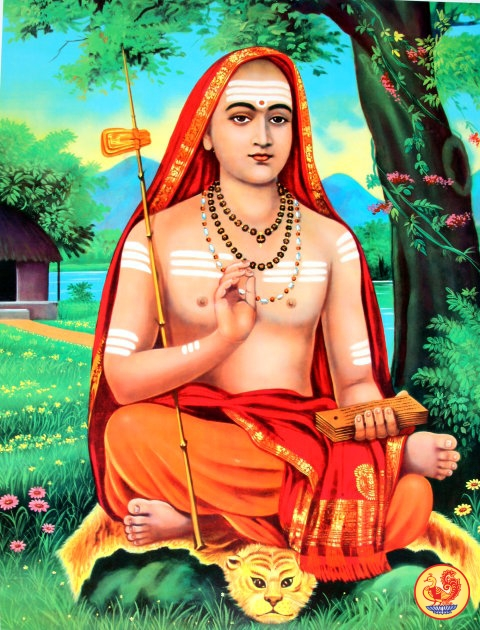

INDIA

Lord Buddha (c 560BC – c 460BC) – Founder of Buddhism. Gave up the comforts of being a Prince in a palace to seek enlightenment in the forests. After gaining the experience of Nirvana, Lord Buddha spent many years travelling India teaching his philosophy of enlightenment and peace.
Sri Krishna – The hero of India’s classic – the Bhagavad Gita. It was Sri Krishna who taught to Arjuna the sublime philosophy of yoga contained in the Gita. It was Sri Krishna who brought religion and spirituality to everyone. Sri Krishna also developed a new path of yoga – bhakti yoga, the yoga of devotion.

Arjuna was one of the greatest warriors of his age and a key figure in the Mahabharata. Arjuna was directed by Sri Krishna on the battlefield of Kurukshetra.The friendship bond of Lord Krishna and Arjuna is the most celebrated bond in Hindu mythology followed by the bond of Lord Rama and Lord Hanuman. According to Mahabharata.
Sri Ramachandra considered the seventh Avatar of Vishnu. Rama’s life is held as an example of the perfect devotion to dharma. His life and teachings are incorporated in the Ramayana, which tells of his exploits and adventures against the demon Ravana.
Guru Nanakguru nanak (1469 – 1539) Spiritual Guru and founder of Sikhism. Guru Nanak, also referred to as Baba Nanak, was the founder of Sikhism and the first of the ten Sikh Gurus. His birth is celebrated worldwide as Guru Nanak Gurpurab on Kartik Pooranmashi, the full-moon day in the month of Katak, October–November.
Adi Shankara (8th Century AD) Adi Shankaracharya was an early 8th century Indian philosopher and theologian who consolidated the doctrine of Advaita Vedanta. He is credited with unifying and establishing the main currents of thought in Hinduism. His works in Sanskrit discuss the unity of the Ātman and Nirguna Brahman "brahman without attributes"
Mirabai (c. 1498 – c. 1557)Mirabai मीराबाई, was a 16th-century Hindu mystic poet and devotee of Krishna. She is a celebrated Bhakti saint, particularly in the North Indian Hindu tradition. Mirabai was born into a Rajput royal family of Kudki district of Pali, Rajasthan, India then spent her childhood in Merta, Rajasthan.
Swami Vivekananda (1863 – 1902 ) – The indomitable spirit of Swami Vivekananda awoke in his fellow Indians a renewed sense of pride and self-belief. Vivekananda embodied both the spirituality of ancient India and the dynamism of the West. He became renowned in the West after his inspirational message of religious tolerance was heard at the World Parliament of Religions 1893.
A. C. Bhaktivedanta Swami Prabhupada (1896-1977) Abhay Charanaravinda Bhaktivedanta Swami, born Abhay Charan De, was an Indian spiritual teacher and the founder-preceptor of the International Society for Krishna Consciousness, commonly known as the "Hare Krishna Movement"
Rabindranath Tagore (1861 – 1941) The Seer-Poet of modern India. Tagore was the first Indian to be awarded the Nobel Prize for Literature in 1913. A consummate poet, composer and artist. Returned his knighthood in protest at the mistreatment of Indians by the British.
Dr S. Radhakrishnan (1888 – 1975) Sarvepalli Radhakrishnan was an Indian philosopher, academic, and statesman who served as the first Vice President of India and the second President of India. His philosophy was grounded in Advaita Vedanta, reinterpreting this tradition for a contemporary understanding. He defended Hinduism against what he called "uninformed Western criticism"
Bankim Chandra Chattopadhyay (1838 – 1894) Bankimchandra Chatterjee or Bankimchandra Chattopadhyay, CBE was an Indian novelist, poet and journalist. He was the composer of Vande Mataram, originally in Sanskrit stotra personifying India as a mother goddess and inspiring activists during the Indian Independence Movement.

Dwijendra Lal Roy (1863 – 1913) – Dwijendralal Ray, also known as D. L. Ray, was a Bengali poet, playwright, and musician. He was known for his Hindu mythological and Nationalist historical plays and songs known as Dwijendrageeti or the Songs of Dwijendralal, which number over 500, create a separate subgenre of Bengali music.
Amartya Sen (1933- ) Amartya Kumar Sen is an Indian economist and philosopher, who has made contributions to welfare economics, social choice theory, economic and social justice, economic theories of famines, decision theory, development economics, public health and measures of well-being of countries.
Ravi Shankar (1920 – 2012) – Ravi Shankar KBE, whose name is often preceded by the title Pandit and "Sitar maestro", was an Indian musician and a composer of Hindustani classical music. He was the best-known proponent of the sitar in the second half of the 20th century and influenced many other musicians throughout the world.
Aryabhata (c. 476 – c. 550) Indian mathematician and astronomer born Assaka. Aryabhata was influential in the development of trigonometry. In astronomy, he made accurate explanations of lunar eclipses’ and the circumference of the earth. His great works include: Āryabhaṭīya and the Arya-Siddhanta.
Satyendra Nath Bose (1894 – 1974)Satyendra Nath Bose, FRS was an Indian physicist specialising in theoretical physics. He is best known for his work on quantum mechanics in the early 1920s, providing the foundation for Bose–Einstein statistics and the theory of the Bose–Einstein condensate.
Sri Jagadish Chandra Bose (1858 – 1937)Sir Jagadish Chandra Bose CSI CIE FRS , also spelled Jagdish and Jagadis, was a polymath, physicist, biologist, biophysicist, botanist and archaeologist, and an early writer of science fiction in British India.
Srinivasa Ramanujan (1887 – 1920) Srinivasa Ramanujan FRS was an Indian mathematician who lived during the British Rule in India. Though he had almost no formal training in pure mathematics, he made substantial contributions to mathematical .
Sir Chandrasekhara Venkata Raman (1888 – 1970) – Sir Chandrasekhara Venkata Raman was an Indian physicist who made ground-breaking works in the field of light scattering. With his student K. S. Krishnan, he discovered that when light traverses a transparent material, some of the deflected light change wavelength and amplitude.